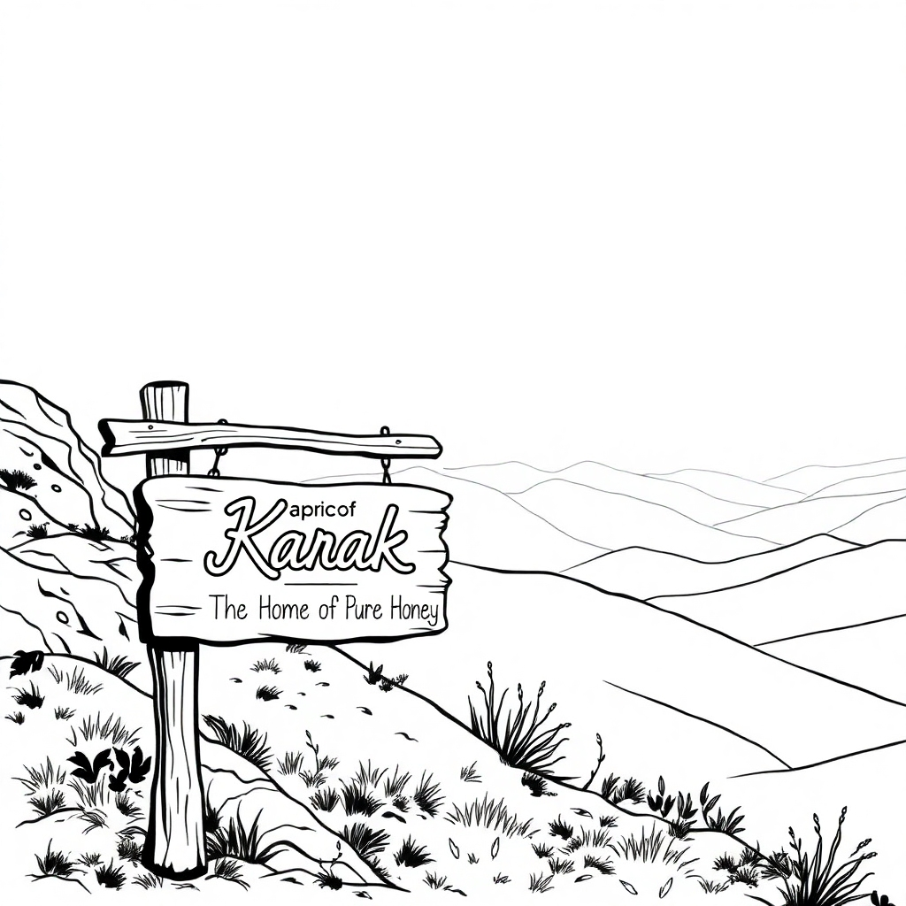

The Tale of
Wild Nectar
A Journey from Forest to Your Table
1. A Sign of Sweet Beginnings
In the heart of KP Karak, where the rugged hills meet the horizon, a small wooden sign sways gently in the breeze. It reads, "Home of Pure Wild Honey." This is where our story begins—a humble acknowledgment of the land that gives birth to the most authentic nectar.
2. The Call of the Wild Hunter

Meet Gulab Khan, the legendary honey hunter of Karak. Armed with generations of wisdom and an unyielding spirit, he sets out at dawn. His journey takes him deep into the wild forests and steep hills, where nature hides her sweetest secrets.
3. The Golden Harvest

As Gulab Khan navigates the dense foliage, he spots the treasure—a thriving beehive hanging high on a cliff. With steady hands and a fearless heart, he ascends, the hum of bees like a melody guiding him closer. One careful cut, and the wild honeycomb is his—a golden bounty of pure nature.
4. A Trusted Partnership

With his harvest in hand, Gulab Khan returns to his village. He dials our number, a smile lighting his weathered face. “The bees were kind today,” he says. His call is the bridge between nature’s raw gift and our promise to deliver it to you.
5. A Deal Sealed in Sweetness
We meet Gulab Khan, sharing stories over tea and tasting the honey he has collected. Each jar holds a tale of adventure, effort, and tradition. We shake hands, sealing a deal that values trust as much as it treasures purity.
6. From Hive to Hands
Back at our workshop, the honey undergoes a careful process. Poured into sleek bottles, sealed with love, and labeled with our promise of authenticity, it’s ready. Our honey tells a story—one of wild origins, local heroes, and unbreakable bonds. And now, it’s ready to be a part of yours.
From the wilderness of Karak to the warmth of your table, our honey is more than a product—it’s a journey. Taste the adventure. Feel the purity. Share the story.